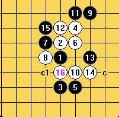

最近做谱特别有感觉，特意奉献一个新研究！
#1 最近做谱特别有感觉，特意奉献一个新研究！ 作者：wd1988 发表时间：2009-3-10 21:32:10
瑞星现在这个11很多人下，因为剑走偏锋，置之死地而后生。前一阵突然发现了这个我经常下的15居然是必败？晕倒了。。。为了警告众生，制谱奉上。
当然，事先说明！这个15必败可能N多人知道，就我这个白痴不知道，但是我既然发现了，那就得发出来，哪怕是被嘲笑。。。。因为总有不知道的，为了大家嘛

 瑞星常见15结果必败.rar
瑞星常见15结果必败.rar
［本站用户 失落刀 于 2009-3-11 19:36:46 花5个金币送您鲜花一朵］
#2 Re:最近做谱特别有感觉，特意奉献一个新研究！ 作者：就是爱玩 发表时间：2009-3-10 21:33:54
谢谢楼主提供分享#3 Re:最近做谱特别有感觉，特意奉献一个新研究！ 作者：就是爱玩 发表时间：2009-3-10 21:35:52
顺便问一下，棋谱是用什么做的，那么多“C"的标记是写上去的吗？
#4 Re:最近做谱特别有感觉，特意奉献一个新研究！ 作者：nara 发表时间：2009-3-10 21:45:09
回楼上：是用终结者做的啊！ShowForum.asp?ForumID=86去这个板块看看，了解下。
本站也有测试版！
#5 Re:最近做谱特别有感觉，特意奉献一个新研究！ 作者：刀魂 发表时间：2009-3-10 22:06:54
呵呵，我还以为这个15很好呢，因为是看棋情下的那个15，原来他是忽悠人的啊，晕死，，，下次还是自己好好想一想为先#6 Re:最近做谱特别有感觉，特意奉献一个新研究！ 作者：堂堂 发表时间：2009-3-10 22:40:09
7届世锦赛Carlsson - Taimla的对局里有摘录#7 Re:最近做谱特别有感觉，特意奉献一个新研究！ 作者：千羽鹤 发表时间：2009-3-11 11:03:19
对啊，这个必败的，以前好像有人发过这个#8 Re:最近做谱特别有感觉，特意奉献一个新研究！ 作者：潇洒 发表时间：2009-3-11 16:25:00
在星月王族版块 瑞14 里发过
茗弈板块里 五子痴 也有发